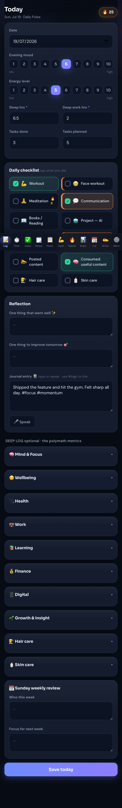
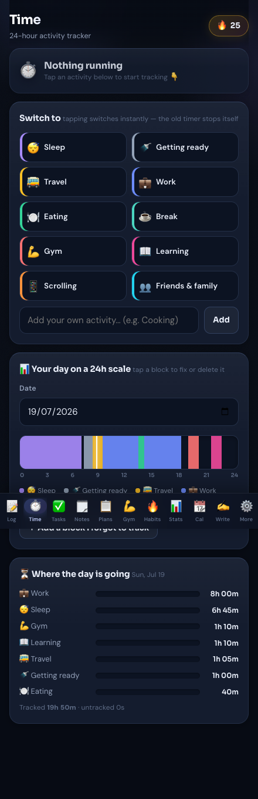
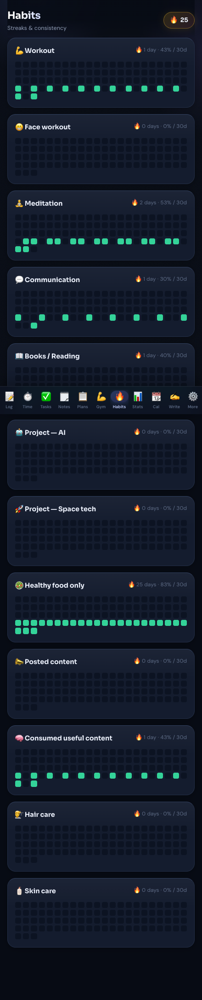
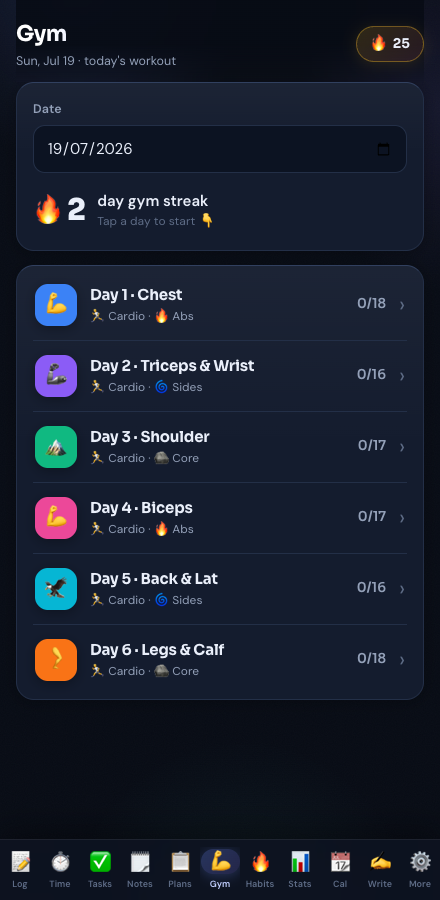
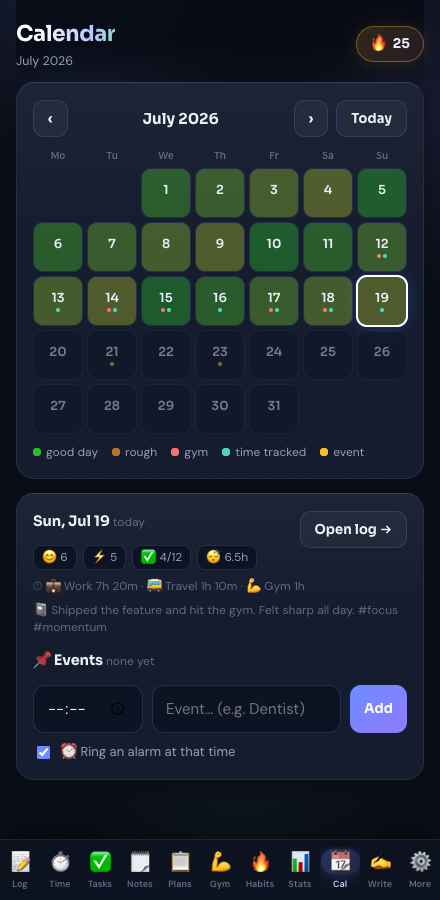
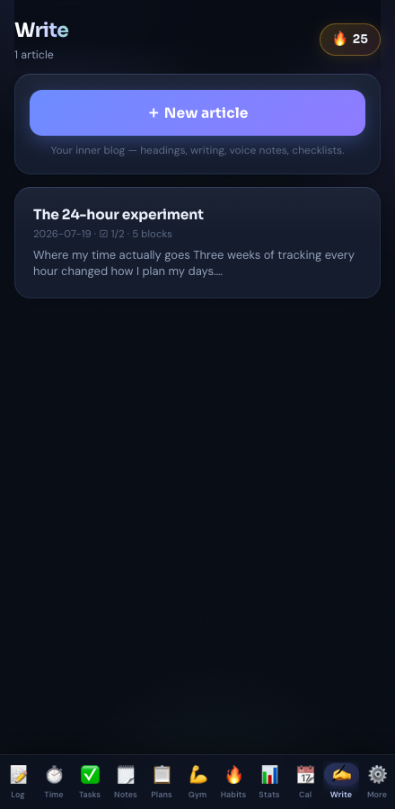
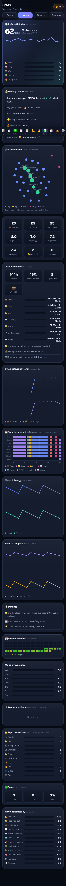
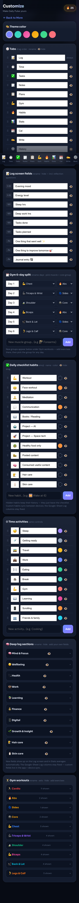
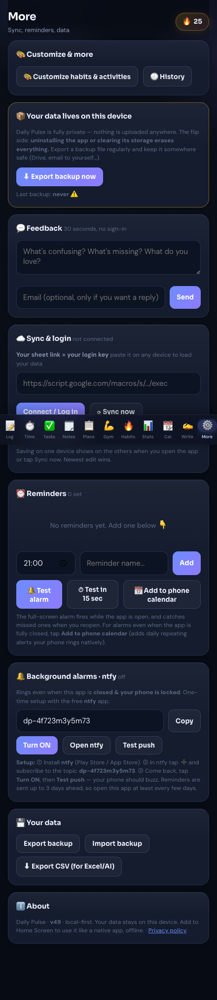

A private, offline tracker for your whole life. Here's a 2-minute tour of everything it does — nothing is uploaded anywhere, it all lives on your phone.

Your daily 60-second check-in.

The signature feature — see where your 24 hours actually go.

Consistency at a glance.

A full workout companion.

Your month, colored by how you felt.

Your inner blog — journals, notes, plans in long form.

What all that tracking adds up to.

Nothing here is fixed. In More ▸ Customize:

Private by design — and that has one flip side.
Daily Pulse · private, offline, yours. · Privacy policy